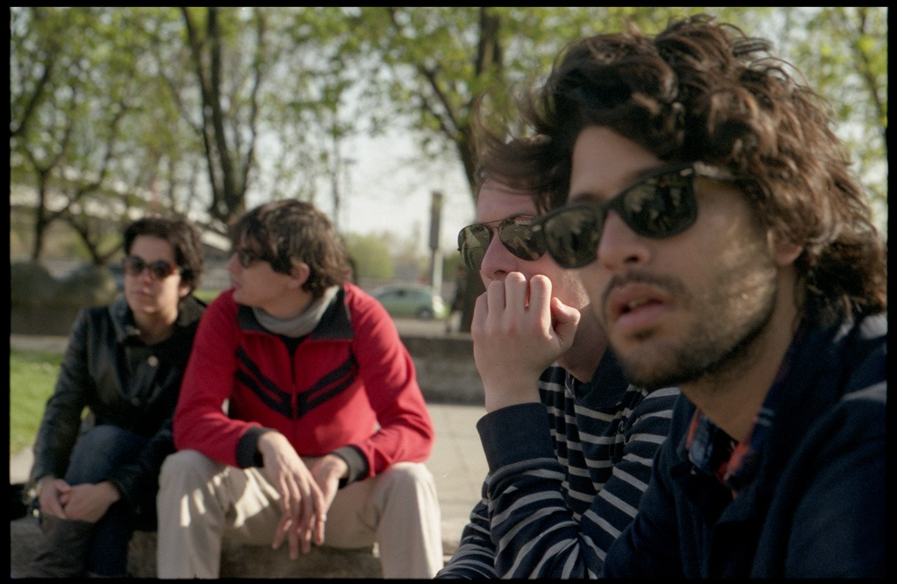

What do you do while you're waiting?!?

We think this is a great idea... and we hope you do to! When you are standing someplace, waiting and there are others around who are also waiting... maybe you can meet someone else! Check out if they logged onto our site... the logon matches day of the week and time of day and location - so anyone who was waiting in about the same place, about the same time... if they signed in here you will see them!